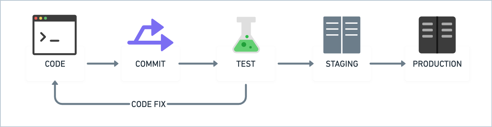

CI/CD - Practical Benefits
Danilo Assis

Overview
- What is CI/CD and why is it important?
- The benefits of CI/CD
- Pipeline
- CI/CD at Woovi
- CircleCI
- BOTina
- CI/CD Minimal Example
- Platforms and Clouds
What is CI/CD and why is it important?
The benefits of CI/CD
Workflows and Pipelines
Woovi CI/CD
CircleCI
Woovi CI/CD - CircleCI

Pipelines

Workflow Fail

Workflow Fail Detail

Workflow Fail Slack Notification

Workflow Success

Workflow Prod Success

Workflow Production

Configuring a Workflow
config.yml
Workflows
workflows.yml
Initial Config
aliases
aliases
jobs
filters
filters
test-changed
deploy-staging-server
BOTina

BOTina - Help Commands

BOTina - Diff Command

BOTina - Release

BOTina - CircleCI Release Workflow

Examples of CI/CD to your Projects

test.yml
deploy.yml
deploy
dependabot.yml
automerge.yml
Dependabot Working

Dependabot Working